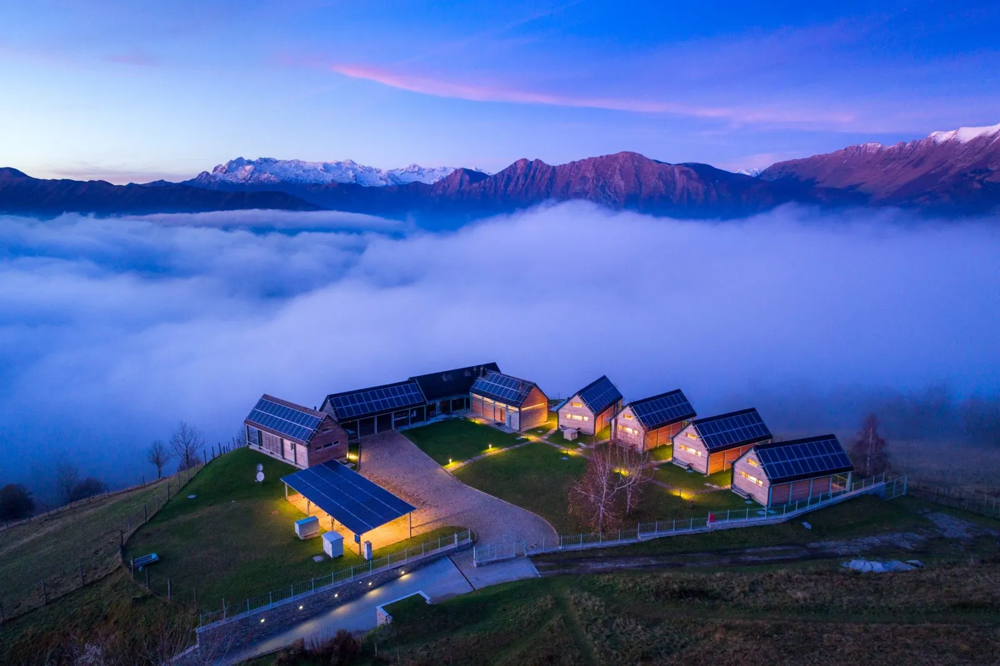

Honourable mention · postmark Livek · 7 km out
Nebesa Chalets
Four mountain chalets above the village of Livek, built by Ana Roš's parents.[12] Hiša Franko meals can be delivered to the chalet[13] — a different proposition to dining in.
Not walking distance. But the most romantic alternative if you are driving anyway.